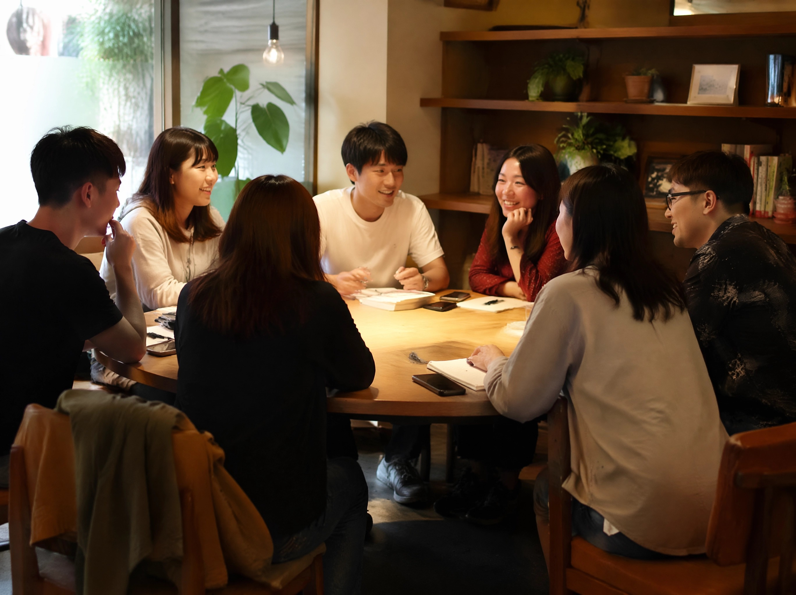
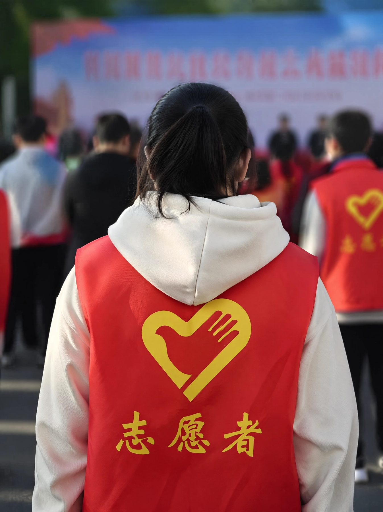

注册志愿者
12,482
活跃志愿者
3,105
服务时长 (h)
156k+
协助核验线索
8,291
成功协助团圆
452
志愿者服务领域
search_check
线索收集
在全国范围内整合失踪线索，通过数字工具初步筛查有效信息。
verified
信息核验
对接相关机构，实地或通过电话、网络等多维手段交叉核准身份信息。
travel_explore
线下寻访
深入偏远地区，协助寻亲家庭进行实地走访、张贴寻人启事等基层工作。
campaign
公益宣传
利用社交媒体平台开展防走失科普，扩大寻亲信息的社会覆盖面。
最新招募岗位
查看全部岗位 arrow_forward数据核对官
紧急协助管理后台数据，核实用户提交的初级寻人线索的真实性。
distance 远程在线
schedule 每天至少1小时
寻访联络员
招募中作为当地支点的联络人，协调志愿者进行实地情况走访及对接。
location_on 四川、重庆、云南
schedule 弹性工作
新媒体创作
招募中负责寻亲故事的撰写及短视频脚本策划，提升公众关注度。
distance 远程在线
brush 文字/视频剪辑
已显示 1-12 条，共 286 条记录
...
跳至
页
志愿者故事

林建国
资深寻人志愿者
服务时长
1,240 小时
协助团圆
12 个家庭
format_quote “每一次看到失散多年的亲人紧紧相拥，我都觉得所有的奔波和等待都值了。我们不仅在寻找人，更在缝合破碎的心。”
张梦华
大学生信息核验组
服务时长
450 小时
线索核实
850 余条
format_quote “数字背后的温度是我们需要去守护的。虽然只是在屏幕后核实，但我知道每通过一个核验，团圆的机会就多了一分。”
陈志远
线下寻访分队长
服务时长
2,100 小时
协助团圆
28 个家庭
format_quote “走遍千山万水，只为那一刻的奇迹。志愿者不只是一份工作，它是对生命尊严的接力。”
近期志愿者活动
寻找失落的童年·线下走访活动
calendar_month 2026.05.20
location_on 湖南省岳阳市
全国志愿者赋能培训会（线上）
calendar_month 2026.06.01
videocam 腾讯会议 / 云端
“防走失计划”社区公益讲座
calendar_month 2026.06.15
location_on 广州市天河区社区中心
如何加入我们
1
提交申请
填写下方报名表格
2
资料审核
通常需要1-3个工作日
3
线上培训
学习寻人基础知识
4
加入团队
分配至相应兴趣小组
5
参与服务
开启您的公益旅程
常见问题
所有的志愿服务均基于自愿原则，不需要缴纳任何费用。线下的必要公干开支，我们会根据具体的项目活动进行相应报销或专项经费支持。
非常欢迎！我们有专门的线上核验组和公益传播组，非常适合利用课余时间贡献青春力量。我们也可以为完成服务时长后的志愿者提供官方出具的志愿服务证明。
没有问题。每一位新入职的志愿者都需要经过系统的线上培训，我们会分配经验丰富的“导师”带您入门。
成为星途志愿者
请填写以下信息，我们的工作人员将在48小时内与您联系
成为志愿者，让爱与希望继续传递
您的每一次参与，都是在为破碎家庭搭建回归之路。每一份力量都至关重要。